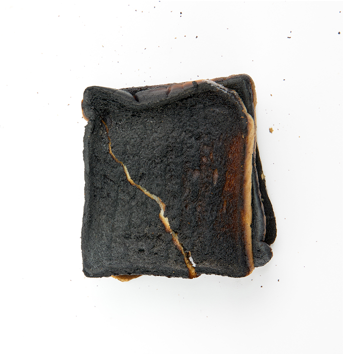
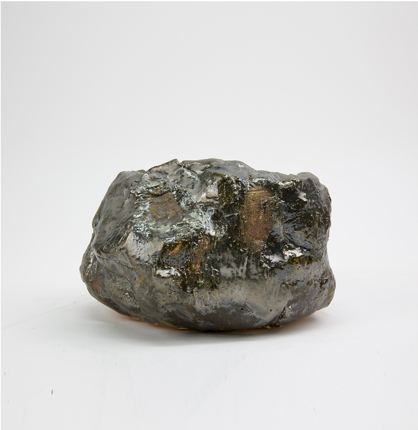
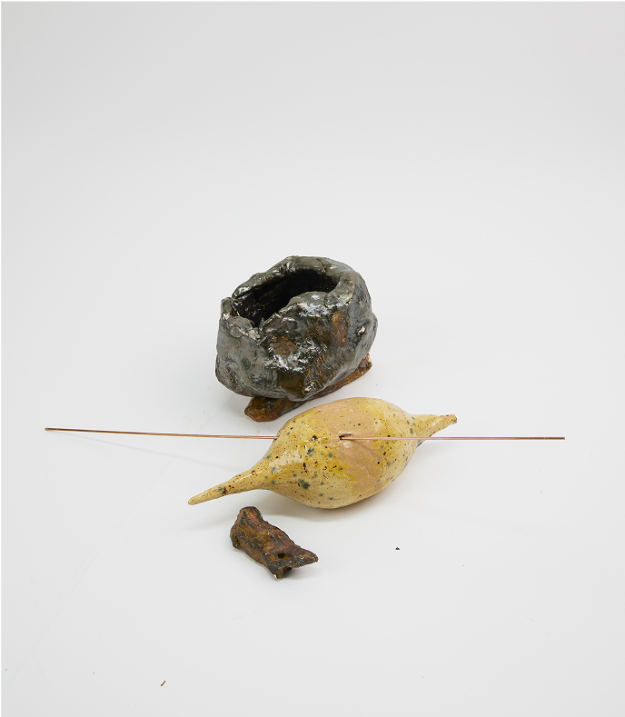
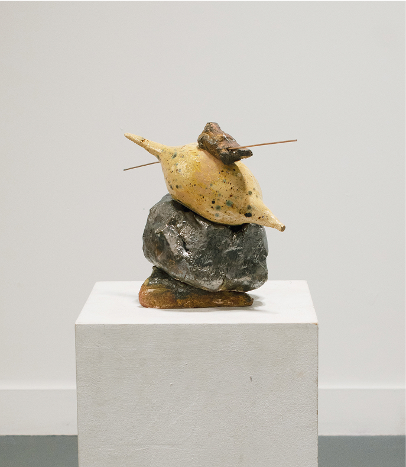
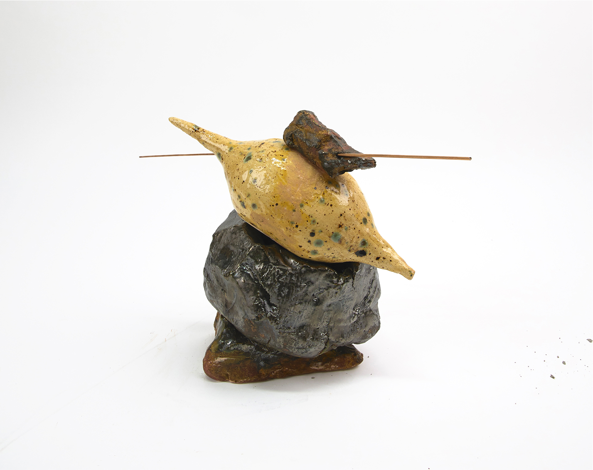

Condemn to Be Free, 2025
This sculptural composition consists of four ceramic elements—two heavy, two pliable—arranged in a fragile, metastable balance. Over time, gravitational pull, subtle deformation, and microscopic shifts in surface tension cause the structure to collapse without warning. This work embodies what I call an “ultra-slow accident”: a moment of sudden failure caused by imperceptible tensions accumulated over time. The work resists fixed meaning, presenting instead a temporality that escapes immediate comprehension. It stages an encounter with delay, rupture, and the quiet agency of materials beyond human intention.


My research centers on what I term the “ultra-slow aesthetic”—not merely objects that evolve slowly, but states in which change accrues imperceptibly over a prolonged period yet erupts in an instant. I call these phenomena “ultra-slow accidents.” While the moment of a slice of bread catching fire appears abrupt, its occurrence is in fact the culmination of long-term factors—habitual routines, ambient humidity, toaster maintenance—built up over weeks or months rather than minutes.


The temporal dynamics of ultra-slow accidents correspond directly to Sartre’s concept of existential anxiety (angoisse). Just as the sculpture’s hidden tensions accrue over time before erupting in a moment of structural failure, Sartrean anguish arises from an ongoing awareness of nothingness (néant) and the boundless contingency of freedom. In both cases, habitual perception obscures the gradual buildup of pressure until a singular event provokes a vertiginous confrontation with responsibility. By externalizing the mechanics of material collapse, Condemn to Be Free stages the precise instant we recognize the abyss beneath our choices and the full weight of our freedom.
